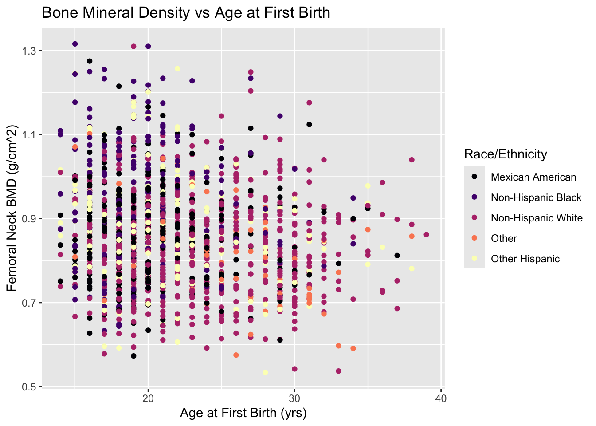
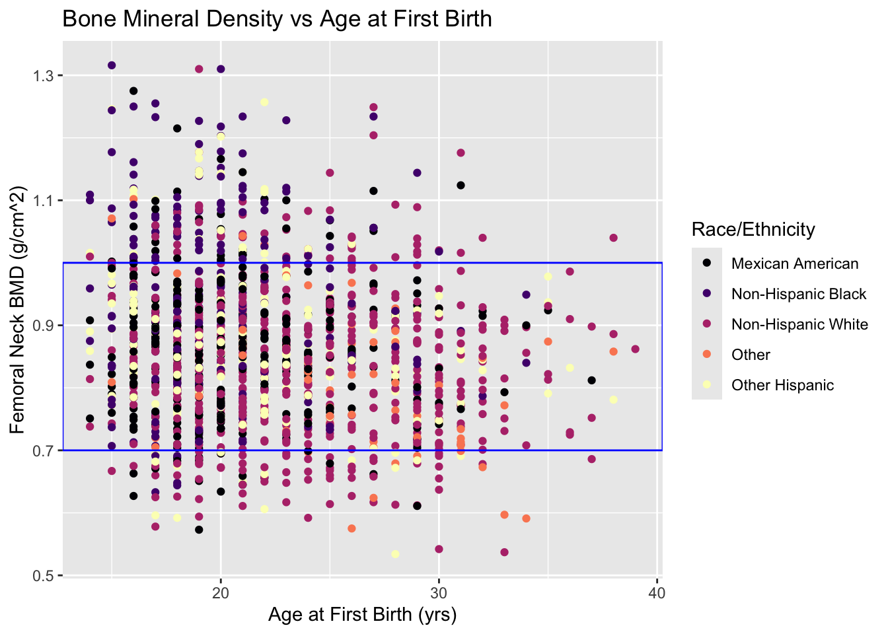
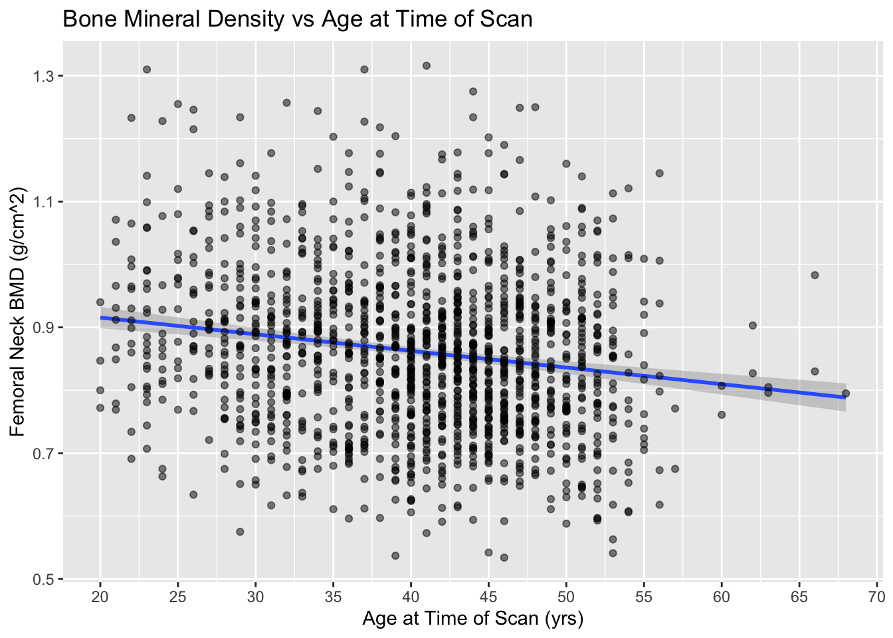
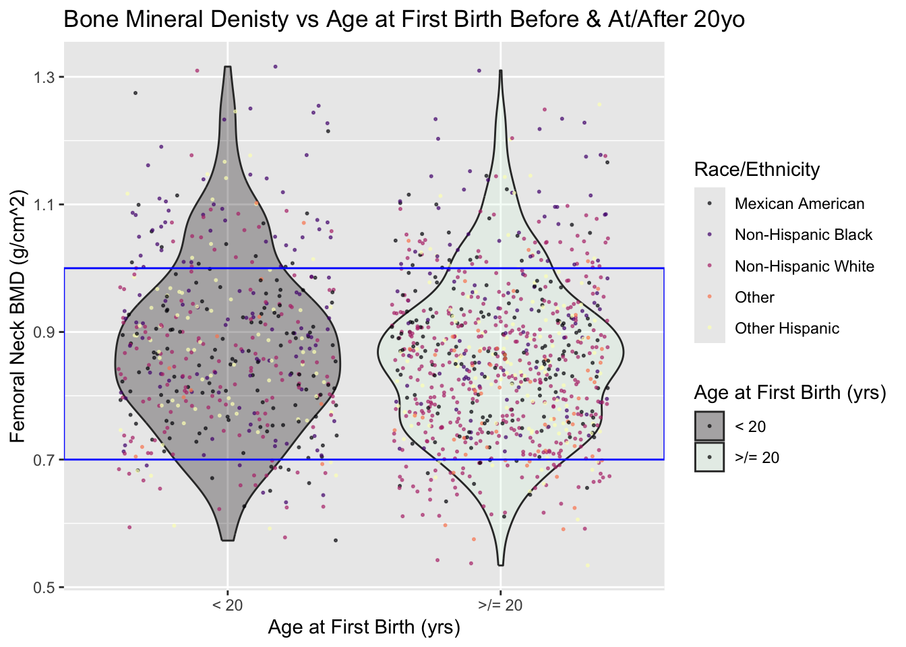
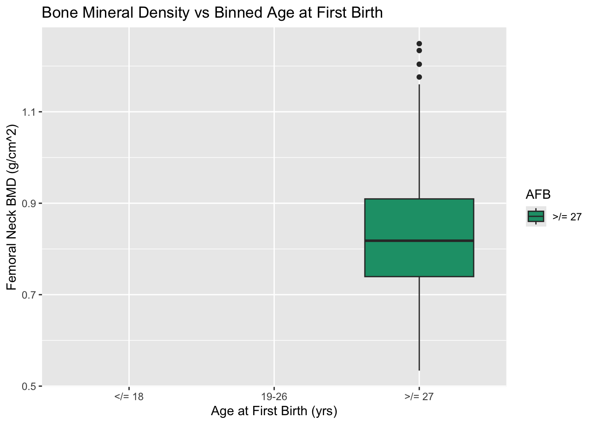
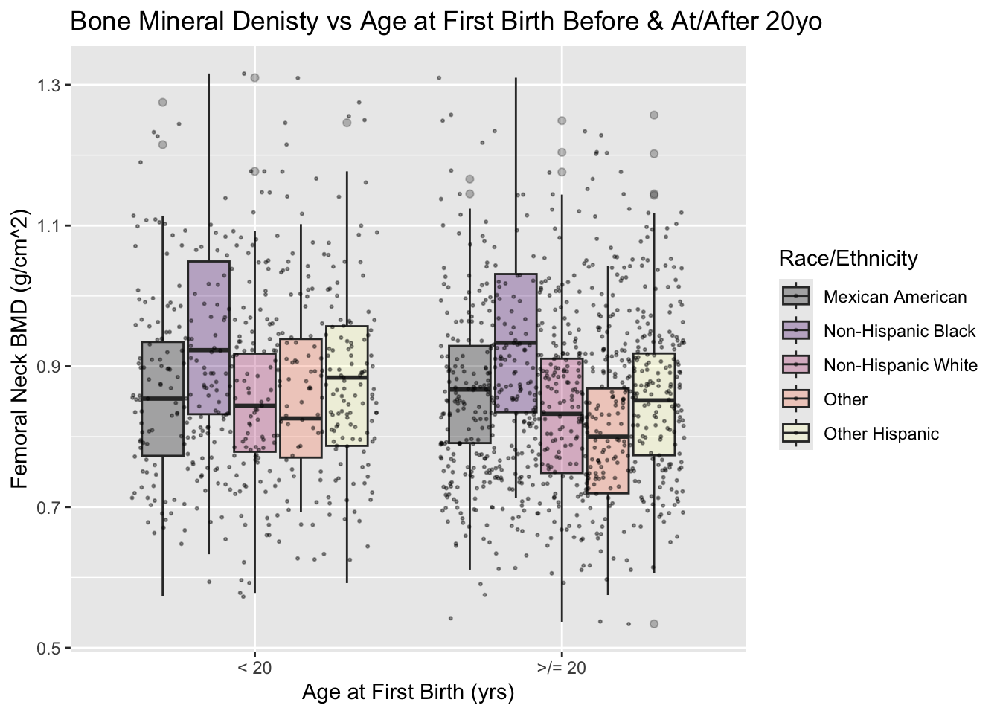

analysis
Calli Quire
2025-02-14
Last updated: 2025-02-24
Checks: 7 0
Knit directory: afb_plo_aaba_2025/
This reproducible R Markdown analysis was created with workflowr (version 1.7.1). The Checks tab describes the reproducibility checks that were applied when the results were created. The Past versions tab lists the development history.
Great! Since the R Markdown file has been committed to the Git repository, you know the exact version of the code that produced these results.
Great job! The global environment was empty. Objects defined in the global environment can affect the analysis in your R Markdown file in unknown ways. For reproduciblity it’s best to always run the code in an empty environment.
The command set.seed(20250126) was run prior to running
the code in the R Markdown file. Setting a seed ensures that any results
that rely on randomness, e.g. subsampling or permutations, are
reproducible.
Great job! Recording the operating system, R version, and package versions is critical for reproducibility.
Nice! There were no cached chunks for this analysis, so you can be confident that you successfully produced the results during this run.
Great job! Using relative paths to the files within your workflowr project makes it easier to run your code on other machines.
Great! You are using Git for version control. Tracking code development and connecting the code version to the results is critical for reproducibility.
The results in this page were generated with repository version fcd160f. See the Past versions tab to see a history of the changes made to the R Markdown and HTML files.
Note that you need to be careful to ensure that all relevant files for
the analysis have been committed to Git prior to generating the results
(you can use wflow_publish or
wflow_git_commit). workflowr only checks the R Markdown
file, but you know if there are other scripts or data files that it
depends on. Below is the status of the Git repository when the results
were generated:
Ignored files:
Ignored: .DS_Store
Ignored: .RData
Ignored: .Rhistory
Ignored: .Rproj.user/
Note that any generated files, e.g. HTML, png, CSS, etc., are not included in this status report because it is ok for generated content to have uncommitted changes.
These are the previous versions of the repository in which changes were
made to the R Markdown (analysis/analysis.Rmd) and HTML
(docs/analysis.html) files. If you’ve configured a remote
Git repository (see ?wflow_git_remote), click on the
hyperlinks in the table below to view the files as they were in that
past version.
| File | Version | Author | Date | Message |
|---|---|---|---|---|
| Rmd | fcd160f | Calli Quire | 2025-02-24 | wflow_publish("analysis/analysis.Rmd") |
| html | fdb6d03 | Calli Quire | 2025-02-24 | Build site. |
| Rmd | 23ff826 | Calli Quire | 2025-02-24 | wflow_publish("analysis/analysis.Rmd") |
| html | 093cf43 | Calli Quire | 2025-02-24 | Build site. |
| Rmd | d2140ff | Calli Quire | 2025-02-24 | wflow_publish("analysis/analysis.Rmd") |
| html | a645a15 | Calli Quire | 2025-02-24 | Build site. |
| Rmd | 9ba5a9c | Calli Quire | 2025-02-24 | Update analysis.Rmd |
| Rmd | ca1b925 | Calli Quire | 2025-02-24 | Update analysis.Rmd |
| Rmd | 5617a3d | Calli Quire | 2025-02-23 | Update analysis.Rmd |
| Rmd | c03ba46 | Calli Quire | 2025-02-23 | Update analysis.Rmd |
| Rmd | 247d85b | Calli Quire | 2025-02-23 | Update analysis.Rmd |
| Rmd | 30bddd1 | Calli Quire | 2025-02-23 | Update analysis.Rmd |
| Rmd | 91ac1ad | Calli Quire | 2025-02-23 | Update analysis.Rmd |
| html | 5bf327e | Calli Quire | 2025-02-21 | Build site. |
| Rmd | b0051af | Calli Quire | 2025-02-21 | wflow_publish("analysis/analysis.Rmd") |
| Rmd | 5962afe | Calli Quire | 2025-02-21 | Update analysis.Rmd |
| Rmd | 67f60ea | Calli Quire | 2025-02-21 | Update analysis.Rmd |
| Rmd | 05e6ec4 | Calli Quire | 2025-02-21 | Update analysis.Rmd |
| Rmd | 9e61e22 | Calli Quire | 2025-02-21 | Update analysis.Rmd |
| html | 78c39e1 | Calli Quire | 2025-02-20 | Build site. |
| Rmd | 62367f7 | Calli Quire | 2025-02-20 | wflow_publish("analysis/analysis.Rmd") |
| html | f2b8dd1 | Calli Quire | 2025-02-20 | Build site. |
| Rmd | 48bb3d9 | Calli Quire | 2025-02-20 | Update analysis.Rmd |
| Rmd | 3c64e09 | Calli Quire | 2025-02-20 | Update analysis.Rmd |
| Rmd | fb7f3d8 | Calli Quire | 2025-02-20 | Update analysis.Rmd |
| Rmd | 7df80b1 | Calli Quire | 2025-02-20 | Update analysis.Rmd |
| Rmd | 10e43f8 | Calli Quire | 2025-02-20 | Update analysis.Rmd |
| Rmd | 9d59cf6 | Calli Quire | 2025-02-17 | Update analysis.Rmd |
| html | 9034257 | Calli Quire | 2025-02-15 | Build site. |
| Rmd | ad870a6 | Calli Quire | 2025-02-15 | summary |
| html | 22bcb25 | Calli Quire | 2025-02-15 | Build site. |
| Rmd | db6c7d9 | Calli Quire | 2025-02-15 | Update analysis.Rmd |
| Rmd | bab9267 | Calli Quire | 2025-02-15 | Update analysis.Rmd |
| Rmd | c8aac9a | Calli Quire | 2025-02-15 | Update analysis.Rmd |
| Rmd | 6fb047a | Calli Quire | 2025-02-15 | update analysis.Rmd |
| html | 1751f9e | Calli Quire | 2025-02-14 | Build site. |
| Rmd | bd50627 | Calli Quire | 2025-02-14 | wflow_publish("analysis/*.Rmd") |
| Rmd | d629939 | Calli Quire | 2025-02-14 | re ran what I just added |
| Rmd | 069404e | Calli Quire | 2025-02-14 | more actual analysis |
Set up
Download, install, run relevant packages
The downloaded binary packages are in
/var/folders/ps/8glpgwws46q79hzcgj61tlsr0000gn/T//Rtmp0qyNMs/downloaded_packages
The downloaded binary packages are in
/var/folders/ps/8glpgwws46q79hzcgj61tlsr0000gn/T//Rtmp0qyNMs/downloaded_packages
The downloaded binary packages are in
/var/folders/ps/8glpgwws46q79hzcgj61tlsr0000gn/T//Rtmp0qyNMs/downloaded_packages
The downloaded binary packages are in
/var/folders/ps/8glpgwws46q79hzcgj61tlsr0000gn/T//Rtmp0qyNMs/downloaded_packages
The downloaded binary packages are in
/var/folders/ps/8glpgwws46q79hzcgj61tlsr0000gn/T//Rtmp0qyNMs/downloaded_packages
The downloaded binary packages are in
/var/folders/ps/8glpgwws46q79hzcgj61tlsr0000gn/T//Rtmp0qyNMs/downloaded_packages
The downloaded binary packages are in
/var/folders/ps/8glpgwws46q79hzcgj61tlsr0000gn/T//Rtmp0qyNMs/downloaded_packages
The downloaded binary packages are in
/var/folders/ps/8glpgwws46q79hzcgj61tlsr0000gn/T//Rtmp0qyNMs/downloaded_packages
The downloaded binary packages are in
/var/folders/ps/8glpgwws46q79hzcgj61tlsr0000gn/T//Rtmp0qyNMs/downloaded_packages
Attaching package: 'dplyr'The following objects are masked from 'package:stats':
filter, lagThe following objects are masked from 'package:base':
intersect, setdiff, setequal, unionLoading required package: gridLoading required package: MatrixLoading required package: survival
Attaching package: 'survey'The following object is masked from 'package:graphics':
dotchart
Attaching package: 'tidyr'The following objects are masked from 'package:Matrix':
expand, pack, unpack── Attaching core tidyverse packages ──────────────────────── tidyverse 2.0.0 ──
✔ forcats 1.0.0 ✔ readr 2.1.5
✔ lubridate 1.9.4 ✔ stringr 1.5.1
✔ purrr 1.0.2 ✔ tibble 3.2.1
── Conflicts ────────────────────────────────────────── tidyverse_conflicts() ──
✖ tidyr::expand() masks Matrix::expand()
✖ dplyr::filter() masks stats::filter()
✖ dplyr::lag() masks stats::lag()
✖ tidyr::pack() masks Matrix::pack()
✖ tidyr::unpack() masks Matrix::unpack()
ℹ Use the conflicted package (<http://conflicted.r-lib.org/>) to force all conflicts to become errors
Loading required package: viridisLiteR package versions:base : 4.4.2
survey : 4.4.2
dplyr : 1.1.4 Import data
Download and read data
1. Demographic data
## Demographic (DEMO) data
## isolate participant identification/sequence number, gender, age, variances, race/Hispanic origin
# 2007-2008
download.file("https://wwwn.cdc.gov/Nchs/Data/Nhanes/Public/2007/DataFiles/DEMO_E.XPT", tf <- tempfile(), mode="wb")
DEMO_E <- foreign::read.xport(tf)[,c("SEQN","RIAGENDR","RIDAGEYR","SDMVSTRA","SDMVPSU","WTMEC2YR", "RIDRETH1")]
# 2009-2010
download.file("https://wwwn.cdc.gov/Nchs/Data/Nhanes/Public/2009/DataFiles/DEMO_F.xpt", tf <- tempfile(), mode="wb")
DEMO_F <- foreign::read.xport(tf)[,c("SEQN","RIAGENDR","RIDAGEYR","SDMVSTRA","SDMVPSU","WTMEC2YR", "RIDRETH1")]
# 2013-2014
download.file("https://wwwn.cdc.gov/Nchs/Data/Nhanes/Public/2013/DataFiles/DEMO_H.XPT", tf <- tempfile(), mode="wb")
DEMO_H <- foreign::read.xport(tf)[,c("SEQN","RIAGENDR","RIDAGEYR","SDMVSTRA","SDMVPSU","WTMEC2YR", "RIDRETH1")]
# 2017-2018
download.file("https://wwwn.cdc.gov/Nchs/Data/Nhanes/Public/2017/DataFiles/DEMO_J.XPT", tf <- tempfile(), mode="wb")
DEMO_J <- foreign::read.xport(tf)[,c("SEQN","RIAGENDR","RIDAGEYR","SDMVSTRA","SDMVPSU","WTMEC2YR", "RIDRETH1")]2. Reproductive health question (RHQ) data
# Reproductive Health Questions (RHQ)
# isolate sequence number, age at first live birth, has had regular periods in the last 12 mo, reason for not having regular periods in last 12 mo
# 2007-2008
download.file("https://wwwn.cdc.gov/Nchs/Data/Nhanes/Public/2007/DataFiles/RHQ_E.XPT", tf <- tempfile(), mode="wb")
RHQ_E <- foreign::read.xport(tf)[,c("SEQN","RHD180", "RHQ031", "RHD042")]
# 2009-2010
download.file("https://wwwn.cdc.gov/Nchs/Data/Nhanes/Public/2009/DataFiles/RHQ_F.xpt", tf <- tempfile(), mode="wb")
RHQ_F <- foreign::read.xport(tf)[,c("SEQN","RHD180", "RHQ031", "RHD042")]
# 2013-2014
download.file("https://wwwn.cdc.gov/Nchs/Data/Nhanes/Public/2013/DataFiles/RHQ_H.xpt", tf <- tempfile(), mode="wb")
RHQ_H <- foreign::read.xport(tf)[,c("SEQN","RHD180", "RHQ031", "RHD043")]
# 2017-2018
download.file("https://wwwn.cdc.gov/Nchs/Data/Nhanes/Public/2017/DataFiles/RHQ_J.xpt", tf <- tempfile(), mode="wb")
RHQ_J <- foreign::read.xport(tf)[,c("SEQN","RHD180", "RHQ031", "RHD043")]3. Bone mineral denisty (BMD) data
# Dual-Energy X-Ray Absorptiometry - Total Femur
# isolate sequence number, total femoral BMD
# 2007-2008
download.file("https://wwwn.cdc.gov/Nchs/Data/Nhanes/Public/2007/DataFiles/DXXFEM_E.xpt", tf <- tempfile(), mode="wb")
DXX_E <- foreign::read.xport(tf)[,c("SEQN", "DXXNKBMD")]
# 2009-2010
download.file("https://wwwn.cdc.gov/Nchs/Data/Nhanes/Public/2009/DataFiles/DXXFEM_F.xpt", tf <- tempfile(), mode="wb")
DXX_F <- foreign::read.xport(tf)[,c("SEQN", "DXXNKBMD")]
# 2013-2014
download.file("https://wwwn.cdc.gov/Nchs/Data/Nhanes/Public/2013/DataFiles/DXXFEM_H.xpt", tf <- tempfile(), mode="wb")
DXX_H <- foreign::read.xport(tf)[,c("SEQN", "DXXNKBMD")]
# 2017-2018
download.file("https://wwwn.cdc.gov/Nchs/Data/Nhanes/Public/2017/DataFiles/DXXFEM_J.xpt", tf <- tempfile(), mode="wb")
DXX_J <- foreign::read.xport(tf)[,c("SEQN", "DXXNKBMD")]Clean
Combine the data sets
# combine data sets for DEMO, RHQ, and DXX into three sub-sets
DEMO <- bind_rows(DEMO_E, DEMO_F, DEMO_H, DEMO_J)
RHQ <- bind_rows(RHQ_E, RHQ_F, RHQ_H, RHQ_J)
DXX <- bind_rows(DXX_E, DXX_F, DXX_H, DXX_J)Merge subsets into one main data set
# merge DEMO + RHQ
predata <- left_join(DEMO, RHQ, by = "SEQN")
# merge 'predata' = DEMO, RHQ, + DXX
data <- left_join(predata, DXX, by = "SEQN")Combine any single variables with 2+ codes into single columns
# combine any variables that have two different variable names (e.g., RHD042 = RHD043) into single columns
# combine RHD042, RHD043
data$RHQ04X <- coalesce(data$RHD042, data$RHD043)Simplify variable/column names
data <-
rename(data,
BMD = DXXNKBMD, AFB = RHD180, MENS = RHQ031,
GENDR = RIAGENDR, AGE = RIDAGEYR, RETH = RIDRETH1, NMENS = RHQ04X
)Omit males from data
# remove male study participants from analysis data; responses to RIAGENDR coded 1
data <- subset(data, !(GENDR %in% c(1)))Omit any participants without BMD (DXXBMD), AFB (RHX180), period/year (RHQ03X) data
# missing BMD data
data <- drop_na(data, "BMD")
# missing AFB data
data <- drop_na(data, "AFB")
# missing period/year data
data <- drop_na(data, "MENS")Omit any participants who answered “don’t know” (coded 999), or “refused” (coded as 777) to AFB
data <- subset(data, !(AFB %in% c(777, 999)))Omit any participants who answered “don’t know” (coded 9), or “refused” (coded as 7) to RHQ03X (Period in last 12 mo?)
# removes participants who don't know if they have had a period in the last 12 months
data <- subset(data, !(MENS %in% c(7, 9)))Omit any participants who answered 5-9, 77, 99 to RHQ04X (Why no period/year?)
# removes participants who aren't having periods b/c: periods usually irregular (coded 4), going/gone through menopause (coded 5 or 7), medical conditions/treatments (coded 6 or 8), other (coded 9), refused (coded 77), don't know (coded 99)
# there are multiple codes for some conditions due to coding inconsistencies between sampling years
# excludes data on individuals who may not be in 'good health'-- defined 'good health' in exclusion flowchart
data <- subset(data, !(NMENS %in% c(5, 6, 7, 8, 9, 77, 99)))Omit any respondents 50+yo
# omit participants who answer >/= 50 to RIDAGEYR
# removes any respondent equal or older than 50yo, which is above the average age of menopause onset
# ensures that data is constricted to those who are not in menopause
data <- subset(data, !(AGE %in% c(50, 51, 52, 53, 54, 55, 56, 57, 58, 59, 60, 61, 62, 63, 64, 65, 66, 67, 68, 69, 70, 71, 72, 73, 74, 75, 76, 77, 78, 79, 80)))Add column for AFB b4 20yo vs at/after 20yo
# adds a column for if participants' AFB was *before* age of peak bone mineral density accrual (PBMDA) or *at/after* age of PBMDA
# if birth occurred before participant was 20 yo (accepted age of peak bone mineral density accrual), coded "yes"; if occurred when or after participant was 20 yo, coded "no"
data <- data %>%
mutate(PkBMD = ifelse(AFB < 20, "< 20", ">/= 20"))Replace race/ethnicity codes with definitions
data <- data %>% mutate(RETH=recode(RETH, '1'='Mexican American', '2'='Other Hispanic', '3' = 'Non-Hispanic White', '4' = 'Non-Hispanic Black', '5' = 'Other'))Create simplified data frame for analyses
# drop all columns that are not the combined columns, age, gender, race/origin or sequence number
# makes simplified data frame (named "df") for analyses purposes
# does not delete the full data frame (named "data")
df <- subset(data, select = -c(SDMVSTRA, SDMVPSU, WTMEC2YR, RHD042, RHD043))Analysis
Linear regression: BMD vs AFB
# model 1
m_1 <-
lm(BMD ~ AFB, data = df)
# view summary
summary(m_1)
Call:
lm(formula = BMD ~ AFB, data = df)
Residuals:
Min 1Q Median 3Q Max
-0.30819 -0.09178 -0.00659 0.07771 0.43626
Coefficients:
Estimate Std. Error t value Pr(>|t|)
(Intercept) 0.9567578 0.0159292 60.063 < 2e-16 ***
AFB -0.0041508 0.0007052 -5.886 4.99e-09 ***
---
Signif. codes: 0 '***' 0.001 '**' 0.01 '*' 0.05 '.' 0.1 ' ' 1
Residual standard error: 0.1269 on 1340 degrees of freedom
Multiple R-squared: 0.0252, Adjusted R-squared: 0.02448
F-statistic: 34.65 on 1 and 1340 DF, p-value: 4.988e-09# visualize
# scatter plot
lm_1 <-
ggplot(df, aes(x = AFB, y = BMD, col = RETH)) +
geom_point() + ggtitle("Bone Mineral Density vs Age at First Birth") + ylab("Femoral Neck BMD (g/cm^2)") + xlab("Age at First Birth (yrs)") + scale_color_viridis("Race/Ethnicity", discrete = TRUE, option = "A")
# view
print(lm_1)
# scatter plot w/ mean range (across all race/ethnicities)
lm_1a <-
ggplot(df, aes(x = AFB, y = BMD, col = RETH)) +
geom_point() + ggtitle("Bone Mineral Density vs Age at First Birth") + ylab("Femoral Neck BMD (g/cm^2)") + xlab("Age at First Birth (yrs)") + scale_color_viridis("Race/Ethnicity", discrete = TRUE, option = "A") + annotate("rect", xmin = -Inf, xmax = Inf, ymin = 0.7, ymax = 1,
alpha = 0, color = "blue")
# view
print(lm_1a)
Linear regression: BMD vs PkBMD
# model 2
m_2 <-
lm(BMD ~ PkBMD, data = df)
# view summary
summary(m_2)
Call:
lm(formula = BMD ~ PkBMD, data = df)
Residuals:
Min 1Q Median 3Q Max
-0.32308 -0.09219 -0.00582 0.07492 0.45292
Coefficients:
Estimate Std. Error t value Pr(>|t|)
(Intercept) 0.879561 0.005805 151.527 < 2e-16 ***
PkBMD>/= 20 -0.022478 0.007272 -3.091 0.00204 **
---
Signif. codes: 0 '***' 0.001 '**' 0.01 '*' 0.05 '.' 0.1 ' ' 1
Residual standard error: 0.1281 on 1340 degrees of freedom
Multiple R-squared: 0.007079, Adjusted R-squared: 0.006338
F-statistic: 9.553 on 1 and 1340 DF, p-value: 0.002037# visualize
# violin plot
lm_2 <-
ggplot(df, aes(x = PkBMD, y = BMD, fill = PkBMD)) +
geom_violin(alpha = 0.3) +
geom_jitter(aes(color = RETH), size = 0.4, alpha = 0.6) +
ggtitle("Bone Mineral Denisty vs Age at First Birth Before & At/After 20yo") + xlab("Age at First Birth (yrs)") + ylab("Femoral Neck BMD (g/cm^2)") + scale_color_viridis("Race/Ethnicity", discrete = TRUE, option = "A") + scale_fill_viridis("Age at First Birth (yrs)", discrete = TRUE, option = "G")
# view the plot
print(lm_2)
# violin plot w/ mean range
lm_2a <-
ggplot(df, aes(x = PkBMD, y = BMD, fill = PkBMD)) +
geom_violin(alpha = 0.3) +
geom_jitter(aes(color = RETH), size = 0.4, alpha = 0.6) +
ggtitle("Bone Mineral Denisty vs Age at First Birth Before & At/After 20yo") + xlab("Age at First Birth (yrs)") + ylab("Femoral Neck BMD (g/cm^2)") + scale_color_viridis("Race/Ethnicity", discrete = TRUE, option = "A") + scale_fill_viridis("Age at First Birth (yrs)", discrete = TRUE, option = "G") + annotate("rect", xmin = -Inf, xmax = Inf, ymin = 0.7, ymax = 1,
alpha = 0, color = "blue")
# view the plot
print(lm_2a)
# box plot
lm_3 <-
ggplot(df, aes(x = PkBMD, y = BMD, fill = PkBMD)) +
geom_boxplot(alpha = 0.3) +
geom_jitter(aes(color = RETH), size = 0.4, alpha = 0.6) +
ggtitle("Bone Mineral Denisty vs Age at First Birth Before & At/After 20yo") + xlab("Age at First Birth (yrs)") + ylab("Femoral Neck BMD (g/cm^2)") + scale_color_viridis("Race/Ethnicity", discrete = TRUE, option = "A") + scale_fill_viridis("Age at First Birth (yrs)", discrete = TRUE, option = "G")
# view the plot
print(lm_3)
Linear regression: BMD vs PkBMD by Race/Ethnicity
# based on the same LM, just split up by race/ethnicity
# violin plot
lm_4 <-
ggplot(df, aes(x = PkBMD, y = BMD, fill = RETH)) +
geom_violin(alpha = 0.3) +
geom_jitter(size = 0.4, alpha = 0.6) +
ggtitle("Bone Mineral Denisty vs Age at First Birth Before & At/After 20yo") + xlab("Age at First Birth (yrs)") + ylab("Femoral Neck BMD (g/cm^2)") + scale_fill_viridis("Race/Ethnicity", discrete = TRUE, option = "A")
# view the plot
print(lm_4)
# box plot
lm_5 <-
ggplot(df, aes(x = PkBMD, y = BMD, fill = RETH)) +
geom_boxplot(alpha = 0.3) +
geom_jitter(size = 0.4, alpha = 0.4) +
ggtitle("Bone Mineral Denisty vs Age at First Birth Before & At/After 20yo") + xlab("Age at First Birth (yrs)") + ylab("Femoral Neck BMD (g/cm^2)") + scale_fill_viridis("Race/Ethnicity", discrete = TRUE, option = "A")
# view the plot
print(lm_5)
sessionInfo()R version 4.4.2 (2024-10-31)
Platform: aarch64-apple-darwin20
Running under: macOS Sonoma 14.6
Matrix products: default
BLAS: /Library/Frameworks/R.framework/Versions/4.4-arm64/Resources/lib/libRblas.0.dylib
LAPACK: /Library/Frameworks/R.framework/Versions/4.4-arm64/Resources/lib/libRlapack.dylib; LAPACK version 3.12.0
locale:
[1] en_US.UTF-8/en_US.UTF-8/en_US.UTF-8/C/en_US.UTF-8/en_US.UTF-8
time zone: America/Detroit
tzcode source: internal
attached base packages:
[1] grid stats graphics grDevices utils datasets methods
[8] base
other attached packages:
[1] viridis_0.6.5 viridisLite_0.4.2 hrbrthemes_0.8.7 lubridate_1.9.4
[5] forcats_1.0.0 stringr_1.5.1 purrr_1.0.2 readr_2.1.5
[9] tibble_3.2.1 tidyverse_2.0.0 ggbeeswarm_0.7.2 ggplot2_3.5.1
[13] tidyr_1.3.1 haven_2.5.4 survey_4.4-2 survival_3.7-0
[17] Matrix_1.7-1 dplyr_1.1.4 workflowr_1.7.1
loaded via a namespace (and not attached):
[1] gtable_0.3.6 beeswarm_0.4.0 xfun_0.50
[4] bslib_0.8.0 processx_3.8.5 lattice_0.22-6
[7] callr_3.7.6 tzdb_0.4.0 vctrs_0.6.5
[10] tools_4.4.2 ps_1.8.1 generics_0.1.3
[13] pkgconfig_2.0.3 lifecycle_1.0.4 farver_2.1.2
[16] compiler_4.4.2 git2r_0.35.0 munsell_0.5.1
[19] getPass_0.2-4 mitools_2.4 fontLiberation_0.1.0
[22] fontquiver_0.2.1 vipor_0.4.7 httpuv_1.6.15
[25] htmltools_0.5.8.1 sass_0.4.9 yaml_2.3.10
[28] Rttf2pt1_1.3.12 extrafontdb_1.0 later_1.4.1
[31] pillar_1.10.1 jquerylib_0.1.4 whisker_0.4.1
[34] cachem_1.1.0 fontBitstreamVera_0.1.1 tidyselect_1.2.1
[37] digest_0.6.37 stringi_1.8.4 labeling_0.4.3
[40] splines_4.4.2 extrafont_0.19 rprojroot_2.0.4
[43] fastmap_1.2.0 colorspace_2.1-1 cli_3.6.3
[46] magrittr_2.0.3 foreign_0.8-87 withr_3.0.2
[49] gdtools_0.4.1 scales_1.3.0 promises_1.3.2
[52] timechange_0.3.0 rmarkdown_2.29 httr_1.4.7
[55] gridExtra_2.3 hms_1.1.3 evaluate_1.0.3
[58] knitr_1.49 rlang_1.1.5 Rcpp_1.0.14
[61] glue_1.8.0 DBI_1.2.3 rstudioapi_0.17.1
[64] jsonlite_1.8.9 R6_2.5.1 systemfonts_1.2.1
[67] fs_1.6.5